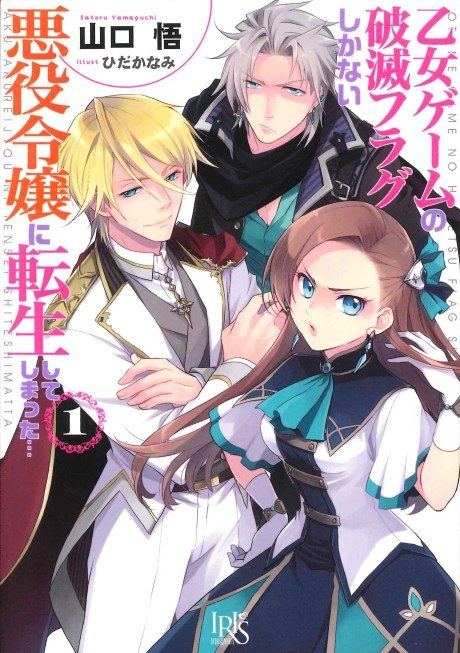

My Next Life as a Villainess: All Routes Lead to Doom!
乙女ゲームの破滅フラグしかない悪役令嬢に転生してしまった…
We haven't found where the anime ends in the light novel yet.
7.3AniList score
—Animeter, no votes yet
24episodes, 2 seasons
Rate it or report where you stopped
Filler
6 of 24 episodes are filler and 2 mix canon with filler.
Episodes24
Canon16
Filler6
Mixed2
123456789101112131415161718192021222324
CanonMixedFillerRecap
Skip list (filler episodes)
7–9, 18–20Sources: Anime Filler List
More like My Next Life as a Villainess: All Routes Lead to Doom!
 Manga Vol. 27.3
Manga Vol. 27.3
 Manga Vol. 27.2
Manga Vol. 27.2
 Manga Vol. 47.1
Manga Vol. 47.1
Unclear6.9
The Most Heretical Last Boss Queen: From Villainess to Savior Manga Ch. 517.4
Manga Ch. 517.4
 Manga Vol. 37.1
Manga Vol. 37.1